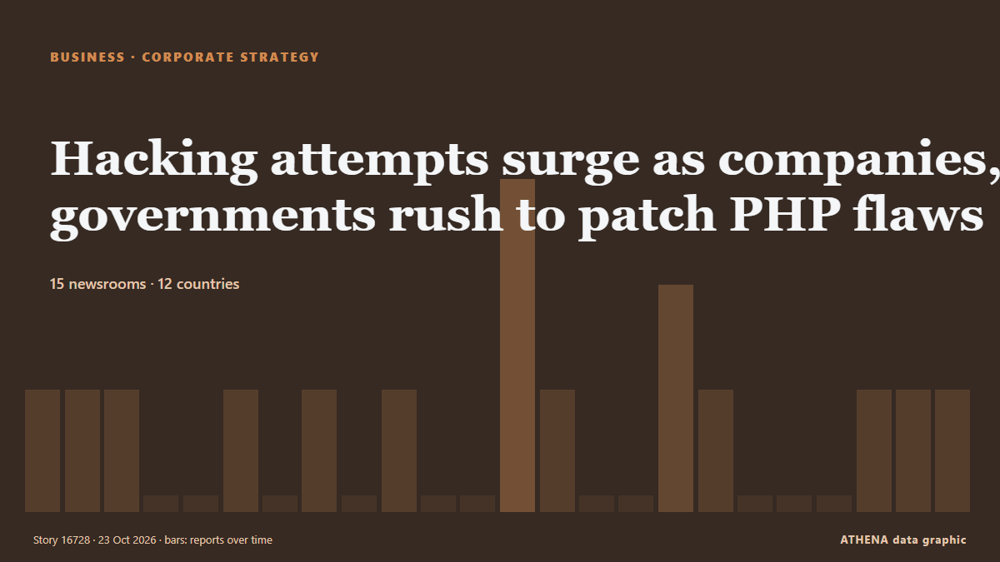

Hacking attempts surge as companies, governments rush to patch PHP flaws

TOKYO/BEIJING/AMSTERDAM, Oct 22 (Reuters) - Global firms and governments rushed on Thursday to patch critical flaws in the PHP programming language that underpins much of the internet, as cloud firms… από Daily Maverick
Αναφέρθηκε ανεξάρτητα από 15 μέσα σε 12 χώρες από τις 21 Οκτ, πρώτο το The Hacker News· η κάλυψη εξασθενεί. Το ATHENA εκτιμά τον κίνδυνο μέτριο (2.5/10), κυρίως λόγω της σοβαρότητάς του και της εμβέλειάς του. Βεβαιότητα 85% (υψηλή): το επιβεβαιώνουν 15 ανεξάρτητα μέσα, μέση αξιοπιστία 73%. Μέσα ανά χώρα: Ινδία (3), Τουρκία (3), Κάτω Χώρες (1). Κάλυψη: 21 Οκτ έως 23 Οκτ, 47 ώρες.
Γιατί έχει σημασία: Οι ειδήσεις για εταιρείες και επενδύσεις δείχνουν πού κινούνται τα κεφάλαια και ποιοι κλάδοι κερδίζουν ή χάνουν έδαφος.
Τι άλλαξε: 10 νέες αναφορές από 10 μέσα στο 24ωρο έως 23 Οκτ.
Οι τίτλοι των ειδήσεων παρουσιάζονται στα αγγλικά, όπως δημοσιεύτηκαν.
Με μια ματιά
Επιλέγεται, βαθμολογείται και γράφεται από τη δημοσιευμένη μεθοδολογία του ATHENA. Κανένας συντάκτης δεν παρεμβαίνει σε μεμονωμένα γεγονότα. Πώς παράγεται ›
| 21 Oct 10:36 UTC | 1 |
|---|---|
| 21 Oct 12:36 UTC | 1 |
| 21 Oct 14:36 UTC | 1 |
| 21 Oct 16:36 UTC | 0 |
| 21 Oct 18:36 UTC | 0 |
| 21 Oct 20:36 UTC | 1 |
| 21 Oct 22:36 UTC | 0 |
| 22 Oct 00:36 UTC | 1 |
| 22 Oct 02:36 UTC | 0 |
| 22 Oct 04:36 UTC | 1 |
| 22 Oct 06:36 UTC | 0 |
| 22 Oct 08:36 UTC | 0 |
| 22 Oct 10:36 UTC | 3 |
| 22 Oct 12:36 UTC | 1 |
| 22 Oct 14:36 UTC | 0 |
| 22 Oct 16:36 UTC | 0 |
| 22 Oct 18:36 UTC | 2 |
| 22 Oct 20:36 UTC | 1 |
| 22 Oct 22:36 UTC | 0 |
| 23 Oct 00:36 UTC | 0 |
| 23 Oct 02:36 UTC | 0 |
| 23 Oct 04:36 UTC | 1 |
| 23 Oct 06:36 UTC | 1 |
| 23 Oct 08:36 UTC | 1 |
| 22 Oct 07:05 UTC | 1.6 |
|---|---|
| 22 Oct 07:07 UTC | 3.9 |
| 22 Oct 12:12 UTC | 4.1 |
| 23 Oct 06:41 UTC | 2.7 |
| 23 Oct 09:32 UTC | 2.5 |
Γιατί αυτοί οι αριθμοί
Σημασία
Κίνδυνος
Βεβαιότητα
Η κάλυψη — ποιος το ανέφερε και πότε
ο τίτλος όπως δημοσιεύτηκε · ανοίγει το πρωτότυπο- The Hacker News · ΙνδίαPHP2Shell: What Actually Protects You Before the 14:00 UTC PHP RCE Patch, and What Doesn't
- The Hacker News · ΙνδίαPHP Issues Emergency Patches for Two Critical PHP2Shell RCE Flaws as Exploit Attempts Emerge
- The Next Web · Κάτω ΧώρεςPHP knew about one of the flaws in 2024 but could not agree a fix
- Daily Sabah · ΤουρκίαTürkiye launches nationwide cyber alert over critical PHP flaws
- CNBC World · Ηνωμένες ΠολιτείεςCritical PHP web security flaws spark global alarm as Google, OpenAI and Amazon respond
- Hürriyet Daily News · ΤουρκίαTürkiye launches cybersecurity scans after critical PHP flaws
- Express Tribune · ΠακιστάνMillions of hacking attempts as companies, governments rush to patch PHP flaws
- Rappler · ΦιλιππίνεςMillions of hacking attempts as companies, governments rush to patch PHP flaws
- Türkiye Today · ΤουρκίαTürkiye says government platforms safe after PHP security flaws emerge
- Graphic Online · ΓκάναGovernment agencies given 7 days to patch critical PHP flaws
- The Daily Star — page reader · ΜπανγκλαντέςGlobal hacking attempts / Govts, companies rush to patch PHP flaws
- Taipei Times · ΤαϊβάνMillions of hacking attempts amid rush to patch PHP
- Arab News · Σαουδική ΑραβίαCompanies, governments rush to patch PHP flaws as hacking attempts mount
- Daily Maverick · Νότια ΑφρικήHacking attempts surge as companies, governments rush to patch PHP flaws
- The Kathmandu Post · ΝεπάλHacking attempts surge as firms race to patch PHP flaws
- Times of India · Ινδία'Haven't seen this in a long time': Microsoft CEO on massive PHP flaw patch rush